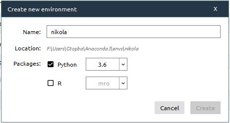

Using Python virtual environment with Anaconda
Anaconda is an easier way for beginner to lean Python. We can create Python virtual environments for both 2.7 and 3.6 without messing around with the system PATH. In fact, you don't even need Administrator privilege. Moreover, you can manage Python modules through the GUI package manager. There are other useful tools such as Spyder IDE and Jupyter Notebook which we will talk about in the future. In Introduction to Nikola , I created an environment using virtualenv and virtualenvwrapper-win packages which is fine, but there is a simpler method. Let's get started.
- Download and install
-
Download latest version of Anaconda . I installed the Python 3.6 version. However, you still can create Python 2.7 environment.

Anaconda Navigator.
- Create new environment
-
From the left, select Environments tab and create new environment with python 3.6 as show in figure below.
Creating new Python 3.6 environment.
- Install desired package in the environment
-
Start the environment terminal

Terminal with Python virtual environment.
Install Nikola package:
pip install --upgrade "Nikola[extras]"
Comments
Comments powered by Disqus